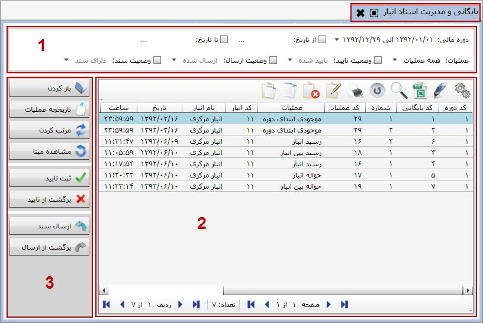

تمام اسناد صادر شده از سیستم انبارداری در این قسمت بایگانی می شود. برای ورود به این قسمت از بخش «عملیات روزانه و بایگانی اسناد» منوی «بایگانی و مدیریت اسناد انبار» را انتخاب کنید، پنجره زیر باز می شود:
در شکل بالا مشاهده می کنید که این صفحه از سه بخش تشکیل شده است که جزئیات هر بخش به شرح زیر است:
1 : این قسمت شامل فیلتر هایی است که توسط آن ها می توانید اسناد موجود در جدول شماره 2 را به صورت دلخواه فیلتر کنید. با انتخاب دوره مالی یا تعیین بازه زمانی دلخواه می توانید اسناد مربوط به آن دوره مالی یا بازه زمانی را در جدول زیرین آن مشاهده نمایید. با استفاده از فیلتر عملیات می توانید اسناد انبار را به تفکیک نام عملیات داشته باشید. همچنین توسط فیلتر های وضعیت تایید، وضعیت ارسال و وضعیت سند، می توانید اسناد را مطابق با نیازتان فیلتر کنید.
 از آن جا که اسناد انبار دارای سند مالی نمی باشند، فیلتر وضعیت سند در این قسمت کاربرد ندارد.
از آن جا که اسناد انبار دارای سند مالی نمی باشند، فیلتر وضعیت سند در این قسمت کاربرد ندارد.
2 : در جدول شماره 2 می توانید اسناد را بر طبق فیلترهایی که ایجاد می کنید مشاهده نمایید، بسیاری از مشخصات اسناد از جمله شماره، کد بایگانی، نام عملیات، نام انبار، تاریخ و ساعت و نام ثبت کننده سند در این قسمت نمایش داده می شود.
3 : حال به بررسی نوار ابزار عمودی سمت چپ صفحه بایگانی و مدیریت اسناد انبار که با کادر شماره 3 مشخص شده است می پردازیم:
 : این آیکن سند انتخاب شده را در فرم صدور سند انبار نمایش می دهد و شما می توانید در صورتی که آن سند تایید شده نباشد آن را ویرایش یا حذف کنید. همچنین می توانید از سند باز شده گزارش بگیرید و یا سند قبل و بعد آن را مشاهده کنید.
: این آیکن سند انتخاب شده را در فرم صدور سند انبار نمایش می دهد و شما می توانید در صورتی که آن سند تایید شده نباشد آن را ویرایش یا حذف کنید. همچنین می توانید از سند باز شده گزارش بگیرید و یا سند قبل و بعد آن را مشاهده کنید.
 : اگر یک سند انبار را انتخاب کنید و بر روی آیکن تاریخچه عملیات کلیک کنید پنجره ای ظاهر می شود که در آن تمام عملیاتی که روی آن سند انجام شده است همراه تاریخ و ساعت انجام عملیات و همچنین نام کاربر انجام دهنده آن نمایش داده می شود.
: اگر یک سند انبار را انتخاب کنید و بر روی آیکن تاریخچه عملیات کلیک کنید پنجره ای ظاهر می شود که در آن تمام عملیاتی که روی آن سند انجام شده است همراه تاریخ و ساعت انجام عملیات و همچنین نام کاربر انجام دهنده آن نمایش داده می شود.
 : این آیکن این امکان را میسر می سازد که شما شماره اسناد را به ترتیب تاریخ مرتب کنید. بعد از کلیک بر روی این آیکن پنجره ای ظاهر می شود که محدوده تاریخی را که می خواهید اسناد را مرتب کنید از شما سوال می کند. ( اسناد در محدوده تاریخی نباید در حالت تایید شده باشند.)
: این آیکن این امکان را میسر می سازد که شما شماره اسناد را به ترتیب تاریخ مرتب کنید. بعد از کلیک بر روی این آیکن پنجره ای ظاهر می شود که محدوده تاریخی را که می خواهید اسناد را مرتب کنید از شما سوال می کند. ( اسناد در محدوده تاریخی نباید در حالت تایید شده باشند.)


پس از تعیین بازه زمانی و زدن تایید، شماره اسناد محدوده مورد نظر بر حسب نوع عملیات و تاریخ مرتب می شوند.
 : شما می توانید با آیکن « ثبت تایید» سند های انبار صادر شده را تایید کنید، ضمن اینکه سندی که تایید می شود قابلیت حذف یا ویرایش را ندارد و تا زمانی که سند در وضعیت ارسال شده نباشد می توانید با کلیک بر روی آیکن« برگشت از تایید» آن را از حالت تایید خارج کنید.
: شما می توانید با آیکن « ثبت تایید» سند های انبار صادر شده را تایید کنید، ضمن اینکه سندی که تایید می شود قابلیت حذف یا ویرایش را ندارد و تا زمانی که سند در وضعیت ارسال شده نباشد می توانید با کلیک بر روی آیکن« برگشت از تایید» آن را از حالت تایید خارج کنید.
 : با استفاده از این آیکن شما می توانید بعد از ثبت سند اقدام به ارسال سند مورد نظر کنید و در صورت تمایل اقدام به لغو و برگشت از ارسال سند نمایید.
: با استفاده از این آیکن شما می توانید بعد از ثبت سند اقدام به ارسال سند مورد نظر کنید و در صورت تمایل اقدام به لغو و برگشت از ارسال سند نمایید.